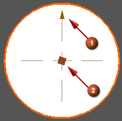

中心线手柄
中心线符号配有手柄，使用这些手柄可以交互方式控制符号的显示 (1) 和关联性 (2)。

创建或编辑中心线符号时将显示手柄。可通过拖动手柄，在屏显输入框中输入值，或从屏显输入框列表中选择值或公式来更改中心线的大小。
也可以在中心线符号的每个直角边上显示手柄。如果要在复杂图纸中快速找到中心线手柄，这种方法将非常有用。

要显示所有的手柄，请选中文件→实用工具→用户默认设置→制图→注释→符号选项卡下的显示所有的扩展手柄复选框。
|
提示 |
要查找用户默认设置，选择文件→实用工具→用户默认设置，然后点击查找默认设置 |
显示所有的扩展手柄用户默认设置支持除了自动标注的中心线以外所有类型的中心线。